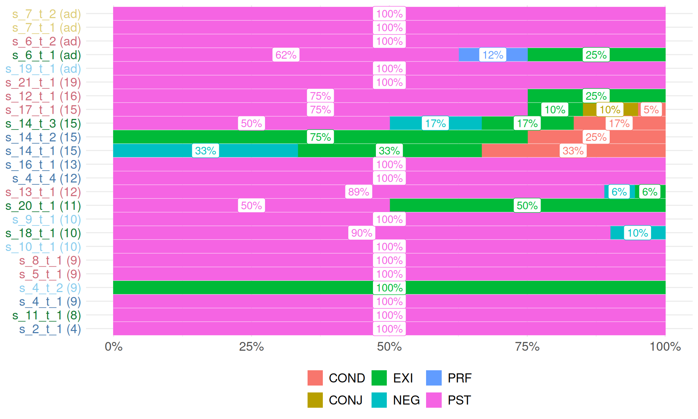

Overall, in our corpus they were used 2286 and 929 times respectively, or 47% and 19%, out of 4818 finite predications total.
The individual breakdown of TAMP constructions (note that some constructions are put into thematic groups to simplify representation, see Supplement for details on the groups) in individual texts looks as follows, where the speakers are sorted by their age:
By excluding reported speech we arrive at an even higher proportion: 2175 and 906 tokens of PST and JNT, respectively, representing 58% and 24% of predications.
The difference between distributions of TAMP constructions within reported speech and in the narrative chain alone indicates that PST and JNT are indeed mostly narrative tenses, while other forms are used in both and some are mostly restricted to the conversational domain, such as the imperative which was used outside reported speech only 6 times out of 146.
There are only 6 utterances of IMP outside of RS out of 146 total utterances. There are only 2 utterances of PROH outside of RS out of 6 total utterances.
There are only 24 utterances of IMP outside of RS out of 51 total utterances. There are only 1 utterances of PROH outside of RS out of 2 total utterances.
RES+RETR+PHAS/IMPF
Mano
Mano: calculate and vizualize individual ratios of RES+PHAS+RETR to text length in predications outside RS
Mano & Kpelle: visualize which TAMP constructions are used with DUR (check all forms that have the _DUR extension, such as PST_DUR, separate DUR and regroup the remainder of the forms in the same way as you did when visualizing tense diversity)
Mano & Kpelle: visualize which TAMP constructions are used with DUR (check all forms that have the _DUR extension, such as PST_DUR, separate DUR and regroup the remainder of the forms in the same way as you did when visualizing tense diversity)
Mano: visualize subset of complex syntax: the ratio of prefixes (temp, prec, cond, comme, tail-head, ht[, ht{), + glosses (COND, not the macrocategory but only the gloss) + “clause-final ā as the only marker of subordination” (search in the comment field, column AA) to all predications, without filtering RS
Code
mano_corpus |>select(new_source, age, group_var, chunk_structure, comment) |>mutate(temp =str_count(chunk_structure, "temp"),prec =str_count(chunk_structure, "prec"),cond =str_count(chunk_structure, "cond"),tail_head =str_count(chunk_structure, "tail-head"),ht =str_count(chunk_structure, "ht[\\[\\{]"),cond =str_count(chunk_structure, "COND"),clause_final_a =str_count(comment, "clause-final ā as the only marker of subordination"),sum_of_all = temp+prec+cond+tail_head+ht+cond+clause_final_a,n_predecations =str_count(chunk_structure, "\\["),ratio = sum_of_all/n_predecations) |>select(-comment, -chunk_structure)
Code
mano_corpus |>select(new_source, age, group_var, chunk_structure, comment) |>mutate(temp =str_count(chunk_structure, "temp"),prec =str_count(chunk_structure, "prec"),cond =str_count(chunk_structure, "cond"),tail_head =str_count(chunk_structure, "tail-head"),ht =str_count(chunk_structure, "ht[\\[\\{]"),cond =str_count(chunk_structure, "COND"),clause_final_a =str_count(comment, "clause-final ā as the only marker of subordination"),sum_of_all = temp+prec+cond+tail_head+ht+cond+clause_final_a,n_predecations =str_count(chunk_structure, "\\["),ratio = sum_of_all/n_predecations) |>select(-comment, -chunk_structure) |>arrange(ratio) |>mutate(age2 =if_else(age ==100, "ad", as.character(age)),new_source =str_c(new_source, " (", age2, ")"),new_source =fct_inorder(new_source)) |>ggplot(aes(ratio, new_source, fill = group_var))+geom_col()+labs(y =NULL, fill =NULL)

Kpelle
Kpelle: visualize subset of complex syntax: the ratio of prefixes (temp, comme, cond, tail-head, ht[, ht{ ) + glosses (COND) + clause-final í (search cells containing “clause-final í as the only marker of subordination” in column AA) to all predications, without filtering RS
Visualize ratios of jnt vs jnt.say Visualize ratios of jnt.say vs other.say Visualize different .say constructions (visualize like the initial visualisations in the paper, with a color plot)
Kpelle
Visualize ratios of quot vs jnt.say Visualize ratios of jnt vs quot + jnt.say Visualize ratios of quot+jnt.say vs other.say Visualize ratios quot + different .say constructions (visualize like the initial visualisations in the paper, with a color plot)
reference tracking
Mano
Mano & Kpelle: visualize reference tracking: pro(CR) to pro(SR)